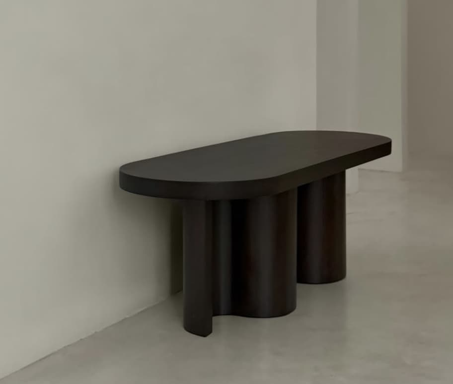
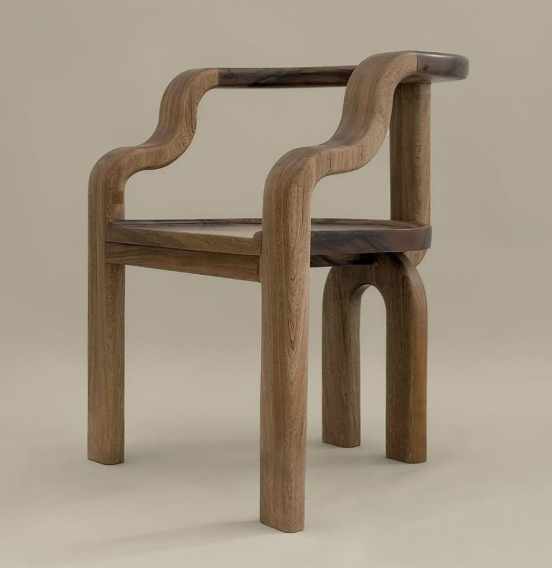
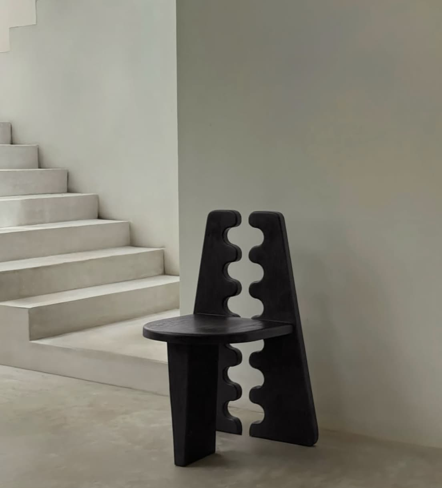

Metamo

El estudio de diseño Métamo, fundado por Manuel Peón Ceballos y Yadir Chan Martín, desarrolla mobiliario que explora la relación entre forma, material y entorno. Su trabajo se caracteriza por el uso de madera y por la creación de volúmenes orgánicos con una fuerte presencia escultórica. Inspirados en los paisajes y la cultura de la península de Yucatán, sus piezas buscan establecer un diálogo sensible con el espacio, trascendiendo su función utilitaria.
Diseños

Mesa/Banca "Kairo", Mérida Yucatán, 2025

Silla "Merea", Mérida Yucatán, 2025

Silla "Venus", Mérida Yucatán, 2025